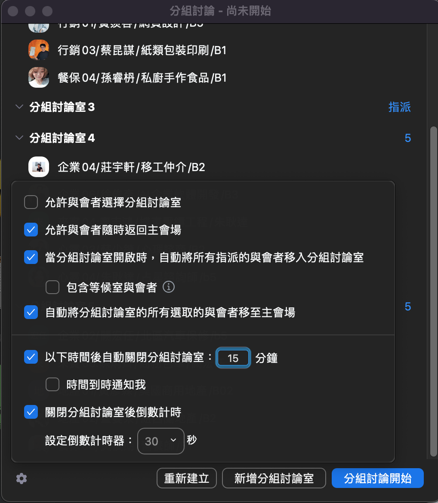

BNI 大正・來賓接待組
賓至如歸
🗂 分房攻略 SOP
兩段流程：週二的
會前分房準備
＋週三的
Zoom 分房操作
。照著做就不會漏。
📝
Part 1・會前分房準備（週二）
1
18:00 到「大正會務接龍」群找來賓名單
接龍格式：姓名／專業別／引薦人（熟悉度 1–10／入會率 1–10／組別 1–6）。接龍截止：週二中午 12 點。
2
開雲端「來賓分配暨進度追蹤表（全員共享）」
到 Google 雲端硬碟找到共享表（常用連結有直達）。
3
接表單最下面 Key 名單
來賓、來賓相關資訊、房長、房員逐一填入。
⚠️ 切記：
所有房長都需要再與該夥伴確認
是否可以協助，如有問題請立即更換！
4
複製到「主持輪值與來賓分房表」
把名單複製過去；主持人名單以組長公告為主。
5
19:00 到「會務公告」群佈達
佈達成員名單並明確告知每位夥伴：房長、協助成員、上下半場主持、大房間主持、分房人員都要 tag 到人。
🚪
Part 2・Zoom 分房操作（週三）
1
請資訊組設定你為「聯席主持人」
上線後第一件事，沒有權限就不能分房。
2
點下方資訊列的「分組討論」
成為聯席主持人後，工具列會出現「分組討論」按鈕。
3
選擇分房數量
依本週分房表的房間數建立；勾選項目要一樣。
4
進入「選項設定」照下圖勾選
來賓分房時間
15 分鐘
（小組分房依主席）、倒數秒數固定
60 秒
，其他勾選完全照這張截圖👇

🔑 關鍵截圖：分房設定勾選對照（一定要照這張）
5
點兵點將
依分房表把來賓、房長、房員一一指派進房間。
6
8:00 開啟分組討論
開房後到每個小房間拍照 → 發「大正高能量」。
🧭 小提醒：人員會一直消失／更新名字，開房前再核對一次；
分好房間就不能再叫別人分
；改名可以請資訊組幫忙（很多人有權限）。
👋 角色任務
📅 本週時間軸
回任務總覽
BNI 大正白金分會・來賓接待組
Givers Gain®